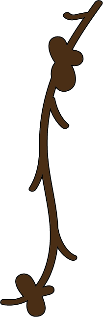

<!DOCTYPE html>
<html>
    <head>
        <title>Dialogue</title>
        <meta charset="UTF-8">
        <link rel="stylesheet" href="css/style.css">
    </head>
</html>
<body class="dialogue">
    <header class="instantinfo">
        <nav>
            <a href="dialogue.html">
            </a>
            <a href="academicwriting.html">
            </a>
            <a href="instinfo.html">
            </a>
        </nav>
    </header>
    <section>
        <div>
            <video controls class="animationa">
                <source src="videos/animation01.mp4" type="video/mp4">
            </video>
        </div>
        <div>
            
        </div>
        <div class="animationb">
            <video controls>
                <source src="videos/animation02.mp4" type="video/mp4">
            </video>
        </div>
        <div>
            
        </div>
        <di>
            <p>Sources:</p>
            <a href="https://web-p-ebscohost-com.uleth.idm.oclc.org/ehost/pdfviewer/pdfviewer?vid=0&sid=4a23dc08-1d8c-46a2-acdb-982451c2348b%40redis">
                <p>French, A. (2020). Academic writing as identity-work in higher education: forming a 'professional writing in higher educaton habitus'. Studies in Higher Education, 45(18), 1605-1617.</p>
            </a>
            <a href="https://files.eric.ed.gov/fulltext/EJ890711.pdf">
                <p>Defazzio, J. et al. (2010). Academic literacy: The importance and impact of writing across the curriculum - a case study. Journal of the Scholarship of Teaching and Learning, 10(2), 34-47.</p>
            </a>
            <p>Website Inspiration:</p>
            <p>Eckrt, R (Writ.). 1000: Writing.</p>
            <p>This course was not only very informative but reshaped my whole view of academic writing. I found it to be very inspiring, and that's why I chose it as my website's inspiration.</p>
        </di>
    <footer>
        <nav>
            <a href="dialogue.html">
            </a>
            <a href="academicwriting.html">
            </a>
            <a href="instinfo.html">
            </a>
        </nav>
    </footer>
</body>